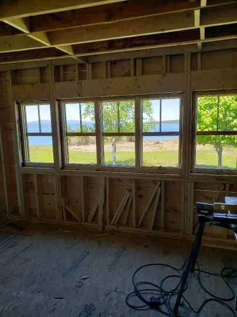
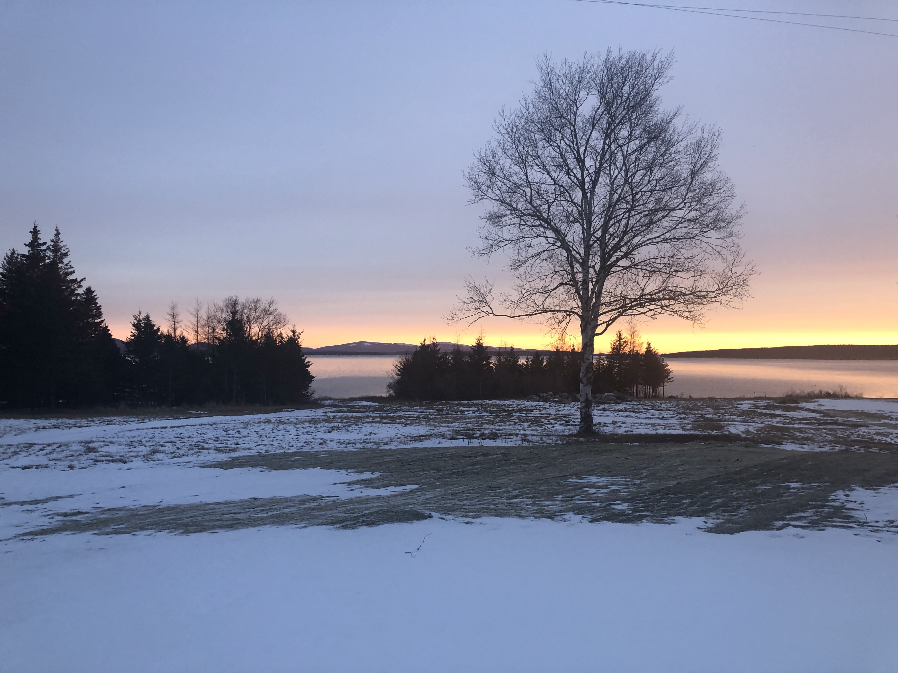

History
We have heard the house dates to the 1850’s but have also heard the date of 1894 as when it was built. The most recent history dates back 70 years, the length of time the family we bought the property from owned it. As we learn more details about the history of the property we will detail it here. For now, we will use this page to collect vintage pictures of the property and notes associated with them as well as the history of the recontruction which spanned approximately 18 months from 2019-2020.
The origin of the name "Cloud House" seems to go back to a tenant who would winterize the property by putting boards up over the windows, and painting clouds on them. There was also a door on the second floor which was painted with clouds on it.
Reconstruction
Subsequent to purchasing the property in 2018 we were able to engage a talented local contractor with a long history of similar renovations. The demolition inside and kitchen and bath planning were the first steps in the process. The framing reconstruction was extensive and followed the demolition. This work included a substantially new interior layout, re-leveling all floors as well as extensive changes to the seaward wall to accomodate new windows and access to the deck. Plumbing and electrical work was next up in the reconstruction and resulted in a house with the infrastructure of 2020 home. Finish work included sheetrock, tiling, flooring and trim. Systems installation proceeded in parallel with the interior work. The kitchen and bathrooms were last in the project with kitchen cabinets, appliances and bathroom fixtures installed and operational. A video walk through of the house as sheetrocking has completed is here.
{kind=link}
Construction for a garage was started in 2023 and is expected to continue through the summer of 2025. This will provide a significant amount of storage space as well as a nice view of the mountains of MDI from it's second floor balcony.
External to the house, site work completed with clearing brush and taking down trees to open up the view. A trench was dug for a basement drain line to keep the basement dry without needing a sump pump. The driveway also received some much needed fill.
{kind=link}
Hauntings
Swan's Island has many stories of hauntings and the Cloud House figures prominently in them. In a local podcast there was a spirited (pun intended) discussion of recent paranormal activity occuring during the demolition work that winter, which also included a reference to the Cloud House as "one of the most notoriously haunted houses on the island". Click here to get to the podcast, and skip to the 11:30 mark where the discusion of the current, and historical, Cloud House paranormal activity starts. Or listen to the entire podcast. It is a fun and entertaining slice of Swan's Island.
Vintage pictures